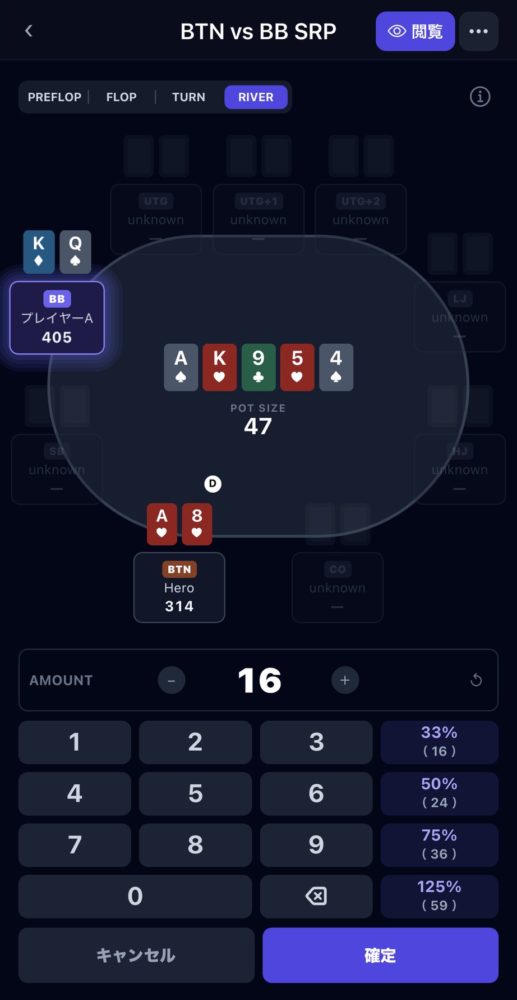
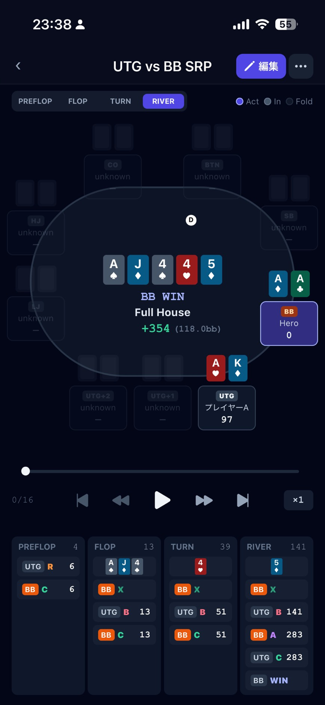
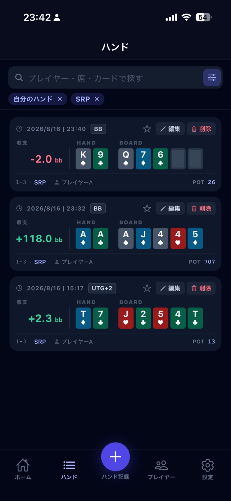
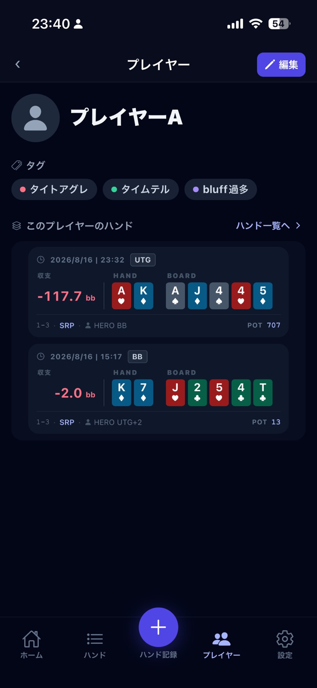
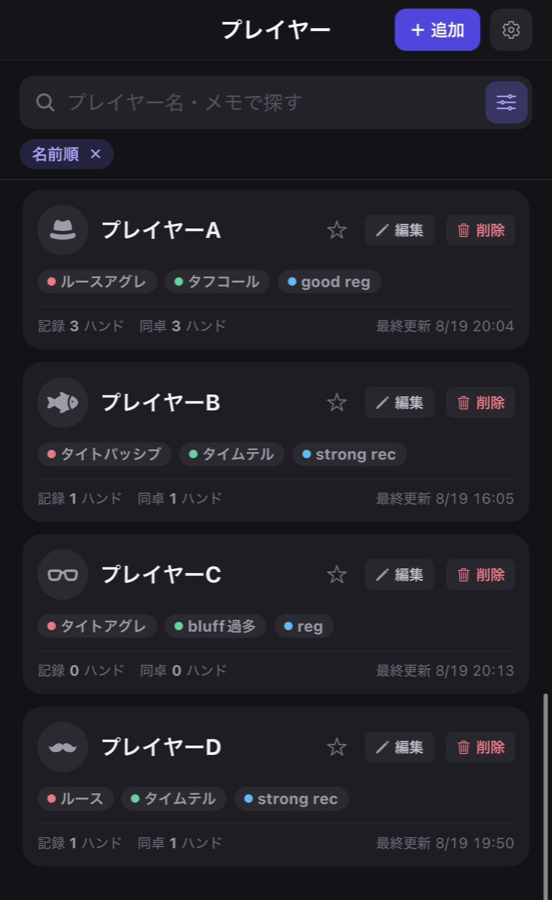

LIVE POKER · HAND TRACKER
Live Cache
Track your hands. Read the table.
ハンドとハンドの合間に打ち込める速さ。
プレイヤーごとに、ハンド履歴が残る。
iOS / Android — 近日公開
ハンド入力 — 手番の席が光る。1 手 1 タップ
SPEED · 圧倒的な入力速度
カードを持っている間、スマホは触れません。だから、降りてから 次のハンドが配られるまでの数十秒で打ち終わる速さにしました。

ハンド入力 — 額はプリセットかテンキーで（実際の画面）
HISTORY · 読み返せる
ストリートごとに 1 手ずつ、ボードも額も 1 画面で追えます。 帰り道に読み返して、次の卓に持っていく。

ハンド詳細 — Full House で +118.0bb。下に 1 手ずつの履歴（実際の画面）
CASH OUT
店ごとにレートとレーキを一度入れておけば、あとは選ぶだけ。 bb 換算まで出るので、レートの違う日をまたいでも比べられます。

ハンド一覧 — 「自分のハンド」「SRP」で絞り込み中（実際の画面）
LINK · 人とハンドがつながる
ハンドの席に人を座らせておくと、その人のページに そのハンドが並びます。しかもその人の視点で。

プレイヤー詳細 — タグ・メモと、この人のハンド（実際の画面）
TAG · 人となりを一言で
ルースアグレ・タフコール・good reg。色分けしたタグを人に 貼っておけば、一覧を開いた瞬間に「どんな相手か」が戻ってきます。

プレイヤー一覧 — タグで人となりが一目で分かる（実際の画面）
YOUR NOTES, YOUR PHONE
対戦相手についてのメモは、人に見せるためのものではありません。 だから最初から、外へ送る作りにしていません。共有するのは、あなたが選んだハンドだけ。